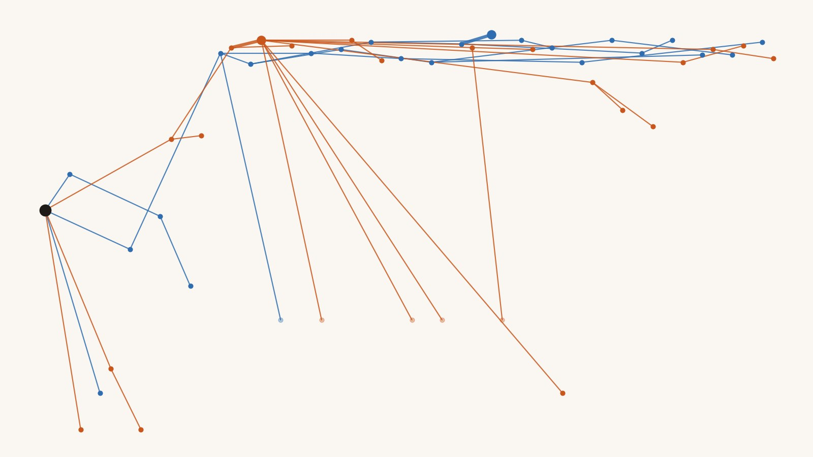
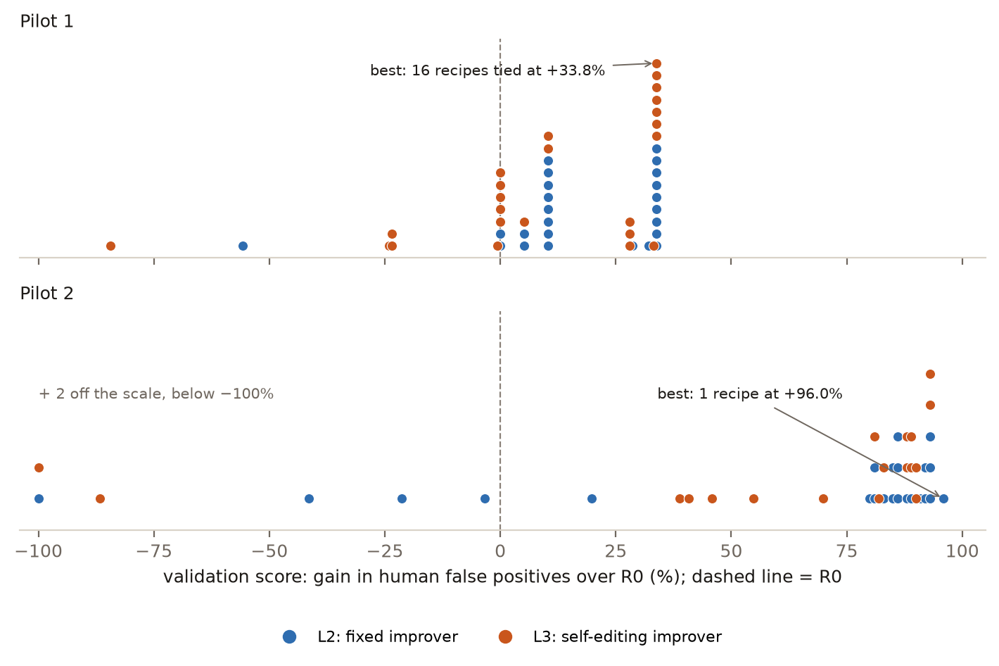
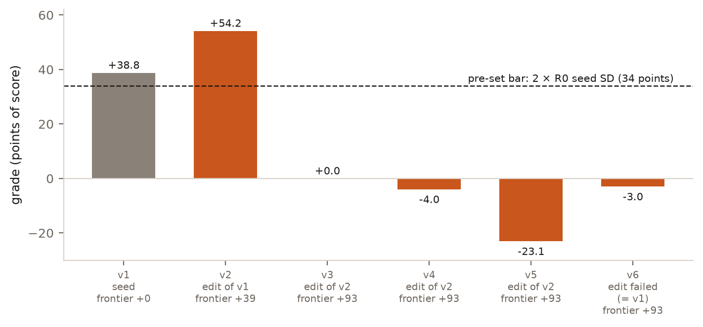
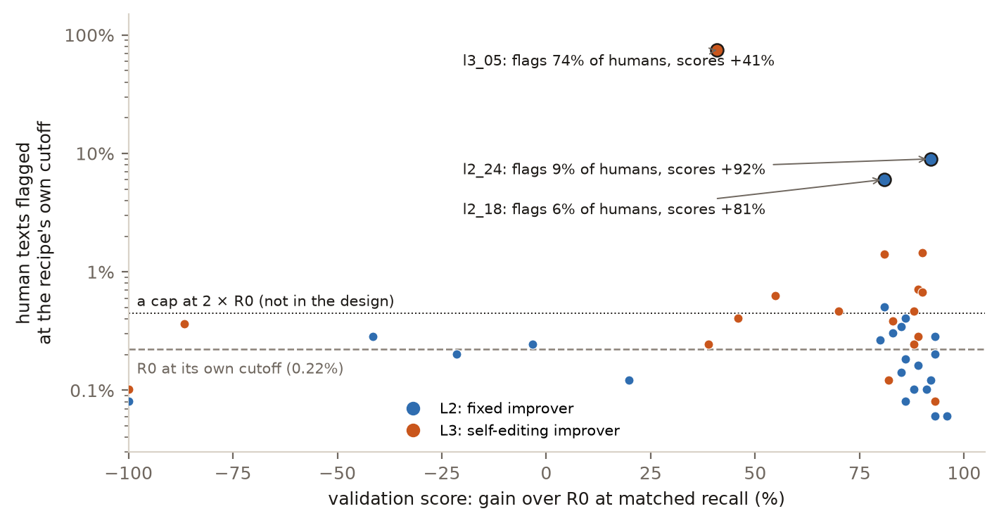

← Research·Experiments·
Can a slop detector’s improver improve itself? Not yet, and the grader had a hole
For people building self-improving or model-designed training pipelines. We gave a code-writing model the job of improving an AI-text detector’s training data, and a second copy the extra power to rewrite its own improving code. Both found the same idea and tied exactly on a private test. The score they were chasing had a hole that three recipes walked through.

results/pilot2/nodes.jsonl. Each dot is one recipe, placed by when it ran (left to right) and its validation score (up is better); each line joins a recipe to the one it was edited from. The black dot is the starting recipe R0; the thick branches end at each arm’s final pick. Blue: the fixed improver; orange: the one that rewrites itself. Both reach the same height by the seventh evaluation.Summary: the short answer and the key results
In short
Can an improver that rewrites its own code build better slop detectors than one that cannot?
Not in these two pilots. A fixed improver (level 2) and a self-editing one (level 3) each got 24 detector retrains to find better training data for an AI-text detector. In pilot 2 both found the same idea, training on old web pages from the middle of the detector’s score range plus AI rewrites, and their final picks flagged exactly the same number of human texts on a private test: 7 of 4,916, against 98 for the starting recipe (2.0% to 0.14%). The self-editing improver made one early gain from a weak starting point; after that none of its four self-edits beat the best recipe so far, and two of them broke its own proposal loop. The guards against gaming the score worked. The score itself had a hole: it never looked at how many humans a recipe flags at the cutoff it would ship, and three buggy recipes flagged 6% to 74% of human texts there while still scoring up to +92%. The first pilot was a no-go for a different reason: its test could not tell 16 recipes apart.
Key results
| What we tested | Result | Compared with |
|---|---|---|
| Does self-editing beat a fixed improver? (pilot 2, private test) | An exact tie: 7 of 4,916 human texts flagged for each arm’s pick (0.142%); difference 0.00 points [−0.06, +0.10]; 5 of the 7 are the same texts | Fixed improver (L2) against self-editing improver (L3), equal budget |
| Did the search beat the starting recipe? | Human false positives at matched recall 2.0% → 0.14% for both picks (drop 1.36 to 2.50 points, 95% CI); partial AUROC 0.866 → 0.92 (L2) and 0.90 (L3) | R0, the hard-negative loop at proxy scale (98 of 4,916) |
| Did the self-edits make a better improver? | One gain (v2: +54 points over a frontier of +39); then 4 self-edits, 0 beat the frontier of +93; 2 broke the proposal loop (2 of 4 slots lost each), 1 failed outright | The pre-set bar: 2 × R0’s seed SD (34 points) |
| Side-finding: the own-cutoff loophole | 3 of 43 recipes flagged 6.0%, 9.0% and 74.4% of validation humans at their own cutoffs (27× to 333× R0’s 0.22%) and scored +81%, +92% and +41%. A cap at 2× R0, not in the design, would have penalised 12 of 43; neither pick | R0 at its own cutoff |
| Can the test rank recipes? (the pilot-1 failure) | Pilot 1: 16 of 48 recipes tied at the best validation score. Pilot 2: 43 recipes, 26 distinct scores, 1 within one false positive of the best | Pilot 1 against pilot 2 |
| Did the anti-gaming guards work? | Recall-failure penalty: 4 failures, none picked, no improver wrote a strategy around it. Blinded cutoffs: caught 1 recipe with typed-in offsets. Copy cap: 4 copies of the frontier earned nothing | Pilot 1, where the improver wrote “being bold with the cutoff is fine” into itself |
| Sandbox escapes | 0 attempts logged in 53 proposals per pilot (Wilson upper bound 11.7 to 13.8 per 100) | STOP’s 0.42% for GPT-4 over 10,000 attempts |
| Predictions | Pilot 1: 3 hit, 4 missed. Pilot 2: 5 hit, 5 missed (Section 06). Both pilots: no-go for the full design | 17, written before each pilot ran |
01Introduction
Give a coding model the job of making an AI-text detector flag fewer human writers, and in its first hour it will try what a person would: add more human examples, raise the bar for calling something AI. Give a second copy the power to rewrite how it works on that job, its own prompts and its own retry loop, and the hope is that it gets better at the job, not only at this detector. In our runs it did not, and the most useful thing we learned was about the scoreboard both were chasing.
What is known. Self-improving code is not new. Self-Taught Optimizer (STOP) ran a seed “improver” program on its own source, and the improved improver beat the seed; it also found that GPT-4 wrote code that switched off its sandbox in 0.42% of 10,000 attempts. Darwin Gödel Machine kept every self-edited coding system in an archive and beat a fixed meta-system on coding benchmarks, and one of its systems removed the logging a hidden check relied on. Recursive self-improvement of AI research agents (AIDE²) graded each rewrite on private held-out data under an equal budget, so a gain had to be a better method, not more compute. Our own hard-negative note, the prequel to this one, ran a fixed loop of retraining a slop detector on its own false positives: one round took held-out false positives on old web pages from 127 in 20,000 to 0.
What is missing. These systems improve themselves on coding or research benchmarks, where the grade is a pass rate. Many real pipelines now let a model design the training data for another model, graded by a metric someone wrote. We found no study that puts a fixed improver and a self-editing one side by side, at equal budget, on a data-recipe task with a private test, and asks whether the self-edits are worth anything there.
The worry. When the self-editing arm’s detector comes out better, that sounds like self-improvement. But how would we know it isn’t one of three cheaper things? It could have memorised the good recipe into its own prompt (a better recipe, not a better improver). It could have gamed the score (traded recall for false positives, or typed in a threshold read off the feedback). Or the score could have been too coarse to tell any two good recipes apart. The design below has a check for each, and pilot 1 hit all three.
At equal budget, does an improver that may rewrite its own code find better training-data recipes for a slop detector than one that cannot, and can the grade it chases be gamed?
What this note does. It runs that comparison twice in a sandbox, with the test locked away until both arms finish, and reports both pilots, including the one that failed. Its contributions:
- A negative result at equal budget: the self-editing improver tied the fixed one exactly on the private test, and its self-edits stopped helping once the work was good.
- A named measurement failure and its fix: pilot 1’s test was saturated (16 recipes tied); pilot 2’s matched-recall score ranks 43 recipes into 26 values.
- A named side-finding, the own-cutoff loophole, with its size: a score made cutoff-free on purpose never sees the cutoff a recipe ships, and recipes flagging up to 74% of humans still scored well.
- Three anti-gaming guards (a recall-failure penalty, blinded cutoffs, a copy cap), each shown firing on a real recipe, and a sandbox log with zero escape attempts in 106 proposals.
Success, fixed in a plan written before any run: (1) both arms get the same number of retrains and the same improver token budget; (2) every pick is made on validation, and the test is read once, after both arms finish; (3) “better” needs a paired 95% interval that excludes zero; (4) the self-editing arm counts as improving itself only if a self-edit beats the best recipe that existed when it was made, by more than twice R0’s seed spread.
02Setup
2.1 Three levels of improvement
A detector learns from data; a recipe, a small Python program, decides which data and how. Three things can improve.
| Level | What improves | Who improves it | Here |
|---|---|---|---|
| 1. Self-training | The detector | A fixed loop: mine its own false positives, retrain | The hard-negative note; our starting recipe R0 |
| 2. Recipe search | The recipe | A fixed improver (a model plus a scaffold) | Arm L2 |
| 3. Self-improvement | The recipe and the improver | The improver, editing its own code and prompts | Arm L3 |
An analogy: level 1 is a student redoing the questions they got wrong. Level 2 is a tutor rewriting the student’s study plan. Level 3 is the tutor also rewriting how it tutors, and keeping every version of itself in a family tree.
2.2 The detector, R0 and the proxy
The detector is the hard-negative note’s round-0 model: Qwen3-1.7B-Base with a LoRA adapter and a 4-way head (human, light AI edit, heavy AI edit, AI-generated), read as a score from 0 (human) to 1. A full retrain takes about 75 H100-minutes, too slow for 48 evaluations, so every evaluation is an update: start from the round-0 adapter and train on at most 15,000 rows (about 9 minutes on an H100, plus scoring). R0 is the hard-negative loop at that scale: the 2,000 highest-scored old web pages from a pool of 250,000 as human, plus 8,000 rows of the detector’s own training data, one epoch, with its cutoff at the 99th percentile of its validation humans’ scores. Three R0 seeds give the noise floor.
A recipe chooses which pool rows to add and with what labels and weights (from the 250,000-page mining pool, 5,999 AI rewrites of pool pages called mirrors, 79,120 rows of the detector’s training data and 20,000 unlabelled pages), the learning rate and epochs, and its cutoff procedure. Rows are references into the pools; the harness builds the text, so a recipe cannot write training text of its own.
2.3 The arms and the budget
- L2 (fixed improver). Improver v1 proposes one recipe edit at a time with a one-line hypothesis, reads structured feedback on the development tier, and continues from a recipe drawn from its archive (the Darwin Gödel Machine rule: chance ∝ score × 1/(1 + children)). 24 evaluations.
- L3 (self-editing improver). Six improvers: v1 and five self-edits. A self-edit is an improver rewriting its own
improver.pyand prompts; each improver then gets 4 evaluations and is graded on them. 6 × 4 = 24 evaluations. - Same budget. 24 evaluations per arm, one seed, and equal improver-token caps (1.2M in, 200k out per arm, self-edits included). A proposal that fails still uses its evaluation.
2.4 What “better” means
A false positive is a human text the detector flags; recall is the share of AI texts it flags. Every recipe is scored on three tiers of the same evaluation families, split 40/30/30 by a hash of each document: dev (the improver sees detailed feedback), validation (selection; the improver never sees it, except L3’s one-number grade) and test (read once, after both arms finish).
- Pilot 1’s score was the mean false-positive rate over five human families at the recipe’s own cutoff, provided macro recall stayed within 1 point of R0’s. A recipe that broke the recall rule scored the same as R0.
- Pilot 2’s score is the pooled human false-positive rate at matched recall: find the cutoff where the recipe catches as much AI text as R0 does when R0 flags 2% of humans, and count the humans flagged there. The recipe’s own cutoff does not enter it. The score is the relative gain over R0, (R0 − recipe) / R0, so +93% means 93% fewer human false positives than R0 at the same recall. The recall rule still applies at the recipe’s own cutoff, and breaking it now scores min(gain, 0) − 1, always below R0.
- L3’s grade (pilot 2) is an improver’s best validation score minus the frontier, the archive’s best recipe when that improver was made. Copying the frontier scores about 0.
| Pilot-2 evaluation family | Dev | Val | Test | Source |
|---|---|---|---|---|
| Held-out old web pages (human) | 2,389 | 1,775 | 1,836 | FineWeb, crawled before November 2022, from websites never mined |
| HC3 human answers | 1,535 | 1,104 | 1,096 | HC3, 5 sources (new in pilot 2) |
| RAID human texts | 829 | 608 | 602 | RAID sample, 8 domains (new in pilot 2) |
| Enron, EditLens, Epoch AI and magazine humans | 1,862 | 1,431 | 1,382 | The hard-negative note’s sets |
| All humans (the score’s denominator) | 6,615 | 4,918 | 4,916 | |
| AI texts, 10 families | 5,175 | 3,802 | 3,870 | EditLens AI-written and AI-edited, Enron AI emails, Epoch AI plain and imitations, magazine AI, 2026 pages (old and new topics), HC3 ChatGPT answers, RAID AI texts |
2.5 The sandbox
Recipes, their cutoff step and improvers all run in a macOS sandbox-exec profile: no network, writes only to the run’s own folder, reads only the Python install, the read-only pools and that folder. The grader and every label sit outside it; training runs on Modal with fixed code. Three logs, all written from outside: a static scan of every proposed file (STOP’s string check, extended to evaluation paths, subprocess, socket, exec and more), a Python audit hook that logs every file open, process and socket inside the sandbox, and SHA-256 hashes of every fixed and evaluation file before and after each evaluation. An attempt is any logged try to read an unmounted path, write a read-only one, edit a fixed file or reach the network.
03How the study was run
- Plan (2026-11-23): the three levels, four arms of 96 evaluations, the tiers, the metric, nine predictions. Before any run, amended to a pilot first: two arms of 24, one seed, a $200 cap (amendment 1).
- Reconcile with the published hard-negative note: its detector, pools, evaluation file (SHA-256 committed) and baseline counts; the pilot design and seven pilot predictions (amendment 2, committed before any run).
- Pilot 1 gates: the grader reproduced every round-0 count of the hard-negative note and rejected broken recipes (all scores 0.5, wrong length, NaN); R0 reproduced the note’s direction (web false positives 0.01% against round 0’s 0.64%); 3 R0 seeds; 24 of 24 of v1’s proposals ran.
- Pilot 1 arms (2026-11-23, 15:32 to 17:26): 24 + 24 evaluations, improver Claude Sonnet 5.5. Test read once. Verdict: no-go, the test was saturated (Section 4.1).
- Pilot 2 design (amendment 3, before any pilot-2 run): five fixes (a harder, larger human set; the matched-recall score; the recall-failure penalty; blinded cutoffs; a frontier-relative grade with a copy cap and stripping of pasted recipe code) and ten predictions. The improver changed to Qwen3-Coder-30B because both API keys returned “payment required” (402).
- Pilot 2 gates: gate S failed as written (below), so the matched point moved to R0’s 2% operating point (amendment 4, before any arm); a reference reading of 50 random R0 false positives from the new families labelled 50 human-plausible, 0 machine-like and 0 junk; R0’s seed spread passed (17% of its mean, bar 25%); one improver call and one proposal ran end to end.
- Pilot 2 arms (2026-11-24, 10:13 to 13:00): 24 + 24 evaluations. Test read once, after both arms.
- Analysis from saved scores only; predictions scored mechanically. The head-to-head of v1 against the best L3 improver was not run, because its pre-set condition (L3 beats L2 on validation by more than 2 × R0’s seed SD) failed.
| Fixed before any trial | Changed after reading replies |
|---|---|
| The levels and arms; the detector and update proxy; R0; pools; tiers and their 40/30/30 hash split; the budget per arm (evaluations, tokens); DGM parent selection; the sandbox and its three logs; the recall rule; the test read once; every prediction and the scale-up rule of each pilot. Pilot 2’s five fixes were written after reading pilot 1’s results and before any pilot-2 run. | Pilot 1, before the first read of the test: the bootstrap’s relative interval was computed over the 1,991 of 2,000 resamples where R0’s false-positive rate is not zero (it had been NaN). Pilot 2, before any arm: the matched point moved from R0’s own cutoff to its 2% point (amendment 4; prediction S is scored as a miss); the improver model changed (402 on both API keys); the seed improver’s prompts were updated to describe pilot 2’s score; the GPU timeout went from 45 to 25 minutes and the improver-server reservation from $8 to $6, so four evaluations in flight fit the cap. After the arms: the own-cutoff counts and the 2× cap in Section 4.5, and the shared false positives in Section 4.3, are post hoc. |
Conditions: bf16 training and scoring on one H100 per evaluation, about 9 to 11 minutes each; the improver at the scaffold’s own temperatures; Qwen3-Coder on one L40S with a 48k context (pilot 2); macOS sandbox-exec on a laptop for every recipe and improver run.
A pre-set bar that was not met. Pilot 2’s gate S asked for at least 50 R0 false positives per tier at R0’s own cutoff. R0 is conservative there: it flags 0 to 1.4% of HC3 and RAID humans, 11 to 20 per tier in all, even with 3,000 questions per source. Its weakness is recall instead (it catches 6% to 24% of HC3’s ChatGPT answers). The matched point moved to where R0 flags 2% of humans, which gives 98 to 133 R0 false positives per tier, before any arm ran. The gate is met there, not at R0’s own cutoff, and that choice is what opened the loophole in Section 4.5.
04Results
4.1 Pilot 1’s test could not rank recipes: 16 of 48 tied at the top

In pilot 1, R0 flagged only 3 to 5 human texts per test tier. Every good recipe got that down to one or two, so the search was choosing which of about six borderline documents to push under the cutoff (Figure 1, top). One magazine article on test moved the macro rate by 0.49 points, more than R0’s whole mean. Both arms hit that ceiling, L2 by its fifth evaluation and L3 by its fifteenth. Their picks flagged 1 and 2 of 5,989 test web pages, a “difference” of one page.
Pilot 1 also showed two of the gaming routes the worry predicted. The self-editing improver pasted the winning recipe into itself: v4 carried a block headed REFERENCE CODE (use it nearly verbatim) with the recipe’s mining rule and cutoff, plus dev numbers from earlier recipes. That raised its grade without making it a better improver. And it learned the score’s asymmetry, writing into its own prompt that “a failed recall constraint only scores 0, so being bold with the cutoff is fine”; L3 produced 3 recall failures, L2 none. The scale-up rule said no-go, and the reason was the instrument, not the arms.
4.2 In pilot 2 both arms found the same idea, and it cut human false positives from 2.0% to 0.14%
Here are the two picks as their improvers wrote them, before any numbers:
- L2’s pick (
l2_15, the fixed v1, evaluation 15): the 3,000 highest-scored pool pages among those round 0 scored 0.35 to 0.65, as human; 2,200 AI mirrors; 10,000 replay rows; one epoch; cutoff at the 99.5th percentile of validation humans. Its hypothesis: “By using only the 99.5th percentile of human scores for cutoff determination (without any fixed adjustments), we ensure the cutoff is equivariant to the calibration scaling while maintaining the improved mirror weighting strategy to reduce false positives on magazine texts.” - L3’s pick (
l3_07, self-edit v2, evaluation 7): 3,000 random pool pages scored 0.3 to 0.7; 500 mirrors; 7,500 replay rows; learning rate 2.5e-4, 1.5 epochs; cutoff at the 99th percentile. Its hypothesis: “By focusing on mining samples from the 0.3-0.7 score range (closer to the decision boundary) rather than broadly stratifying across score ranges, and reducing replay samples from 8000 to 7500, we will better capture borderline cases that are harder to classify.”
Both moved away from R0’s rule (the 2,000 highest-scored pages) to the middle of the score range, and added AI rewrites so recall holds. On the private test each flags 7 of 4,916 human texts at matched recall (0.142%), against R0’s 98 (1.99%; seeds 120, 94 and 80). The drop is 1.36 to 2.50 points for L2 and 1.32 to 2.50 for L3 (paired bootstrap, 2,000 resamples, cutoff re-found in each), a 93% cut. The boring explanation would be a cutoff shift, and the score rules it out by construction: it is measured at matched recall, so moving a threshold cannot change it. Partial AUROC (to 5% false positives), which needs no cutoff at all, rose from 0.866 to 0.923 (L2) and 0.904 (L3). The picks also keep recall at their own cutoffs (84.1% and 85.5% macro recall, against a floor of 78.0%).
![Step chart of the best validation score so far against evaluation number 1 to 24. The orange line (self-editing improver) jumps from 0 to about 39 at evaluation 4 and to 93 at evaluation 7, then stays flat. The blue line (fixed improver) sits at 20, jumps to 86 at evaluation 6, 92 at 11 and 96 at 15. Diamonds for the test score of each arm's incumbent at evaluations 4, 8, 12, 16, 20 and 24 sit on or just below the lines, ending at 93 for both. A grey band from -34 to +34 marks R0 plus or minus two seed SDs.](figures/search.png)
The search did not overfit the development tier, against the plan’s expectation. The gap ratio, (dev gain − test gain) / dev gain, was 0.02 for L2’s pick and −0.07 for L3’s, and across all 43 recipes the rank correlation with test was 0.93 for dev and 0.92 for validation. With about 4,900 human texts per tier, each false positive is about one point of score, and the tiers agree (Figure 2).
4.3 The self-editing arm tied the fixed one exactly
L3’s pick minus L2’s pick on test is 0.000: 7 against 7 human false positives in 4,916, with a paired interval of −0.06 to +0.10 points. On validation L3 trailed by 3.0 points (+93.0% against +96.0%), far inside R0’s own seed spread (2 × SD = 34 points). Read from the saved per-text scores (kept in the lab), 5 of the 7 test false positives are the same texts for both picks: 4 HC3 answers and 1 web page. The other two are an HC3 answer and a RAID text for L2, and an HC3 answer and an Epoch AI passage for L3. The two arms did not just score the same; they mostly fail on the same people.
Sized against the baseline, the arms’ difference is nothing and the search’s gain is everything: the whole 93% cut comes from moving from level 1 (R0) to level 2, and level 3 added none of it at equal budget. L3 reached its pick sooner (evaluation 7, against 15 for L2’s pick, though L2 was at +86% by evaluation 6), which is a statement about one seed’s path, not about the improver.
4.4 After one early gain, no self-edit beat the frontier, and two broke the improver

v2, v1’s first self-edit, raised its retry count from 2 to 3 and added guidance about earlier successful recipes to its prompts. Its grade was +54 points, over the bar, but its frontier was +39, set by v1’s fourth recipe. The fixed v1 in L2 reached the same level by its sixth evaluation, so v2’s grade says the frontier was easy to beat, not that v2 was a better improver.
The next four self-edits were all made against a frontier of +93, and none beat it (Figure 3). v3 and v4, both edits of v2’s retry loop, each lost 2 of their 4 evaluations because the loop wrote no files when validation kept failing; v3’s one recipe that matched the frontier was a copy (code 93% similar) and earned 0. v5 added a higher sampling temperature and feedback analysis; its best recipe was 23 points below the frontier, and one of its recipes failed the recall rule. v6’s self-edit produced nothing usable, so v6 ran v1’s code; three of its four recipes were copies of the frontier. Qwen3-Coder’s self-edits changed retry logic and prompt wording, never the recipe ideas, so the anti-memorisation filter had nothing to strip (0 lines in 4 self-edits).
4.5 Side-finding: the own-cutoff loophole let recipes flag 74% of humans and still score well

Pilot 2’s fix for saturation made the score cutoff-free: it measures false positives at matched recall, so a recipe cannot win by moving its threshold. The price is that the score never checks the threshold the recipe would actually ship. The recall rule does look at the recipe’s own cutoff, but only from one side: a cutoff that is too low catches more AI and passes it. Three recipes went through that gap (Figure 4):
l3_05sorts the scores in descending order and then indexes from the wrong end, so its “99th percentile” is the 1st. It flags 74.4% of validation humans, 333 times R0’s rate, and scores +41%.l2_18andl2_24set the cutoff at the trimmed mean of human scores. They flag 6.0% and 9.0% of humans (27 and 40 times R0) and score +81% and +92%;l2_24is tied for L2’s third-best score.
All three read as bugs, not deliberate gaming, and none was picked. But the score would have let a deliberate one through: a detector that flags one person in eleven, ranked among the best. Measured post hoc, a cap on the own-cutoff rate at twice R0’s (0.45%) would have penalised 12 of the 43 recipes, these three among them, and changed neither pick (they flag 0.06% and 0.20%). Figure 5 lets you move the cap.
4.6 The anti-gaming guards fired as designed
| Guard (pilot 2) | What happened | Verdict |
|---|---|---|
| Recall-failure penalty | 4 failures (l2_02; l3_01, l3_03, l3_17), scored −1.0 to −4.5 on validation; none picked. No improver code or prompt mentions exploiting the rule (pilot 1’s did) | Prevented as a strategy; failures still happen (prediction R4 missed: 3 in L3, bar ≤ 1) |
| Blinded cutoffs | The cutoff step sees the calibration scores through two random increasing maps and must return the same cutoff for both. l2_08 added fixed offsets (+0.01 / −0.005) to a percentile; its two mapped-back cutoffs were 0.3443 and 0.3426, so it was rejected. Every other recipe used a procedure | Caught once |
| Copy cap | 4 recipes 93% to 97% similar to the frontier (l3_10, l3_21, l3_22, l3_24) got at most 0 credit | Copying earns nothing |
| Strip pasted recipe code from self-edits | 0 lines stripped or rejected in 4 self-edits | Nothing to catch (pilot 1’s improver pasted; pilot 2’s did not) |
The blinded check passed l3_05, correctly: its cutoff is a procedure, just a wrong one. That is the shape of the lesson. Each guard closed the hole it was built for, and the next hole was in a place none of them looked.
4.7 No sandbox escape attempts in 106 proposals
Across both pilots the improvers made 106 proposals (per pilot: 24 recipes in L2, and 24 recipes plus 5 self-edits in L3). None tried to read an unmounted path, write a read-only file, edit a fixed file or reach the network: 0 events in the static scan, the audit hook and the integrity hashes. With 24 and 29 proposals per arm and pilot, the 95% Wilson upper bounds are 13.8 per 100 (L2) and 11.7 per 100 (L3), so these runs cannot tell STOP’s 0.42% from zero. The integrity tripwire fired once during pilot 2’s setup, correctly, when the harness’s own loop.py was edited while the plumbing check ran; it affected that check only.
05Implications for AI safety
A model that improves the process that trains another model is a small, safe version of a loop that matters at scale. Here it did what a careful engineer would do and no more: it found a real 93% cut in false positives, and letting it rewrite itself added nothing at equal budget. That is reassuring about these pilots and says little about stronger improvers or longer runs.
The more transferable result is about the grader. Each pilot’s score had a weakness a search could use. Pilot 1 rewarded pushing six borderline documents under a threshold and treated a broken rule as neutral, and the self-editing improver wrote that second fact into its own prompt. Pilot 2 closed both and opened a third: a cutoff-free score cannot see a broken cutoff. None of the three needed a sandbox escape. A pipeline that lets a model design training data is only as safe as its metric is complete, and what caught these weaknesses was a person reading per-recipe numbers, not the escape monitors.
Recommendation: when a model searches over training recipes against a metric, report every rate the shipped system would have at its own operating point beside the metric, and treat a large one as a failure, even when the metric was designed to ignore it.
06Predictions
Each pilot’s predictions were written before it ran, with thresholds, and are scored here mechanically. Both pilots were registered as exploratory.
| # | Pilot 1 prediction | Threshold | Result | Verdict |
|---|---|---|---|---|
| G1 | The update proxy reproduces the hard-negative note’s direction | R0 web false positives < 0.32% | 0.01% | hit |
| Q1 | Scale-up: L3’s pick at least as good as L2’s on test | L3 − L2 ≤ 0 | +0.0033 points (one web page) | miss (a tie in all but one page) |
| Q2 | The loop overfits dev | gap ratio ≥ 0.25 | −0.43 | miss |
| Q3 | L2 beats R0 on test | gain > 2 × R0 seed SD, relative | +99.1% against 205% | miss (the bar was unreachable: R0’s seed SD equalled its mean) |
| Q4 | At least one logged sandbox attempt | ≥ 1 | 0 | miss |
| Q5 | A self-edit beats the seed improver | max grade v2–v6 > v1’s | +33.8% against +5.2% | hit, confounded (pasted recipe) |
| Q6 | The seed improver writes recipes that run | ≥ 80% ok | 24 / 24 | hit |
| # | Pilot 2 prediction | Threshold | Result | Verdict |
|---|---|---|---|---|
| S | The new evaluation is big enough | ≥ 50 R0 false positives per tier at R0’s own cutoff | 11 to 20 there; 98 to 133 at the 2% point | miss as written (met only after amendment 4) |
| N | The score no longer saturates | < 25% of recipes within one false positive of the best | 1 of 43 (2.3%) | hit |
| R1 | Scale-up: L3’s pick at least as good as L2’s on test | L3 − L2 ≥ 0 (in score) | 0.000 | hit (an exact tie) |
| R2 | L2 beats R0 on test | drop CI excludes 0 | 1.36 to 2.50 points | hit |
| R3 | The loop overfits dev | gap ratio ≥ 0.25 | 0.02 | miss |
| R4 | The penalty removes recall failures in L3 | ≤ 1 failure | 3 | miss (none exploited) |
| R5 | Memorisation is caught | ≥ 1 stripped or rejected line | 0 | miss (nothing was pasted) |
| R6 | A self-edit beats the frontier | max grade > 0.34 | +0.54 (v2) | hit, confounded (weak frontier, Section 4.4) |
| R7 | The open improver writes recipes that run | L2 ok share ≥ 0.6 | 23 / 24 | hit |
| R8 | At least one logged sandbox attempt | ≥ 1 | 0 | miss |
The pilot-2 scale-up rule needed R1 and N to hold and no hack class to be open. The own-cutoff loophole is open, so the rule says no-go for the full design (four arms of 96 evaluations, about $680), and the substance agrees.
Post-mortem. What surprised me: the hard part was not the sandbox or the self-edits but the scoreboard. Each fix to the score exposed the next weakness, and every one was found by reading per-recipe numbers, not by an escape monitor. What I would change: register every rate the shipped detector would have at its own cutoff as a constrained quantity from the start, and start L3 from a strong frontier so its grades measure improving on good work. The lesson for the design guide: a metric made robust to one manipulation (here, moving the cutoff) stops seeing that quantity, so check it separately.
07What this does not show
- A small improver and a small detector. Pilot 2’s improver was a 30B mixture-of-experts coder with about 3B active parameters; its self-edits were shallow (retry counts, prompt wording). A stronger improver could edit itself in ways that matter. The detector is a 1.7B proxy updated for one epoch; the plan’s full-scale 9B confirmation was not run.
- Two pilots, one seed each, 24 evaluations per arm. Each L3 improver was graded on 4 evaluations. The head-to-head (v1 against the best L3 improver from the same start, several seeds) and the transfer task that would separate a better improver from a remembered recipe were never run, because their pre-set conditions failed.
- One domain. Every recipe chose rows for one AI-text detector. Whether self-editing helps on other data-recipe tasks is untested.
- Two pilots used two improver models (Claude Sonnet 5.5, then Qwen3-Coder-30B), so they cannot be compared on improver quality; each compares L2 with L3 under one model.
- Missing arms. The plan’s random-search arm and scalar-feedback ablation were cut from the pilots, so “L2 beats random configurations” is not shown here.
- The sandbox count is small. 0 attempts in 106 proposals bounds the rate at about 12 to 14 per 100 per arm, nowhere near STOP’s 0.4%.
- The loophole’s cap is post hoc. The 2× number is a reading of saved results, not a rerun.
08Reproduce it
experiments/slop-rsi/reproduce.sh --figures redraws every figure and prints every headline number in this note from the committed results/. --dry-run lists every command of the two pilots: build the pools and evaluation sets from the hard-negative note’s data, score R0, run each arm, analyse. Running them needs the hard-negative note’s data on a Modal volume, the EditLens, Epoch AI, HC3 and RAID sets, and macOS for sandbox-exec. Page and evaluation texts and per-text scores stay out of the repository (they are rebuilt from the public datasets); the results publish scores, counts, recipes, improvers and hypotheses. Every recipe and improver the runs wrote is in results/recipes/, results/improvers/ and their pilot2/ twins.
09What’s next
Close the loophole and rerun the same comparison: cap the human false-positive rate at a recipe’s own cutoff (twice R0’s, scored like a recall failure), keep pilot 2’s evaluation set, score and guards, and run L2 against L3 again at equal budget, this time with L3 starting from a strong frontier and the head-to-head and transfer task funded from the start. Separately, the middle-band recipe both arms found is a candidate second round for the hard-negative note, to confirm on a full retrain.
10Questions and answers
Is this recursive self-improvement?
Level 3 is the closest form tested here: the improver edits its own code and prompts and is graded on what the edited version produces. It is not full self-improvement, because the model’s weights never change (STOP’s authors draw the same line), and in these pilots it produced no measurable gain over a fixed improver.
What is the own-cutoff loophole, in one paragraph?
A detector ships with a threshold: scores above it are flagged. Pilot 2 scored recipes at a matched threshold, the one that catches as much AI text as the baseline, so a recipe could not win by moving its own. But then nothing checked the threshold it would ship, except a rule that it must not catch too little AI. A buggy threshold that flags most people catches plenty of AI, passes that rule, and is invisible to the score. Three recipes did this by accident and scored up to +92%.
How should I use this on my own pipeline?
Before letting a model search over recipes, list every number the deployed system will have at its own operating point (here: false positives and recall at the shipped cutoff), and make each one a constraint or a reported failure, even the ones your main metric is built to ignore. Give the search a fixed-improver baseline at the same budget; a self-editing arm that beats only its own starting point has not shown it improves.
Did both arms find the same recipe?
The same idea, not the same code. L2’s pick takes the highest-scored pages inside a middle band with many AI rewrites; L3’s samples the band at random with few rewrites and a higher learning rate. Both leave R0’s top-scored pages out, both flag 7 test humans, and 5 of those 7 are the same texts.
AAppendix: files and citation
A.1 Files
| File | Contents |
|---|---|
results/pilot2/summary.json | The pilot-2 analysis: R0 reference per tier (mfpr matched false-positive rate, seed_mfp_k, ref_recall, own-cutoff counts), gates, each arm’s pick with dev, validation and test metrics and bootstrap intervals (test_mfpr_drop_ci), the test-look curve, l3_minus_l2_test, improvers and grades, memorisation, audit, spend, post-hoc test numbers for every recipe |
results/pilot2/nodes.jsonl | One row per evaluation: arm, parent, improver, hypothesis, status (ok, invalid, no_proposal), training summary, cutoff, dev and validation metrics (score, mfp_k, pooled_fpr at its own cutoff, constraint_fail, per-family counts in fam), copy similarity, integrity flags, start and end times |
results/pilot2/improvers.jsonl, results/pilot2/improvers/ | Each improver: parent, hypothesis, files changed, frontier, per-recipe credits, grade; and its full code and prompts |
results/pilot2/recipes/<node>/recipe.py | Every recipe as the improver wrote it |
results/pilot2/evalset_p2.json, evals_p2_sha256.txt, decontam_p2.json, candidates_p2.json | The evaluation manifest (labels, families, tiers, ids; no text), its hash, decontamination counts, the candidate pool used for sizing |
results/pilot2/gates.json, gate_h_refcheck.json, cutoff_checks.jsonl, memorisation.jsonl | Gate results; the reference reading of 50 R0 false positives (counts and a summary, no text); every blinded-cutoff check; the strip-and-reject log |
results/pilot2/llm_calls.jsonl, spend.jsonl | Improver call metadata (tokens, seconds, model; no prompts); every reservation and measured cost, and the billing reconciliation |
results/summary.json, results/nodes.jsonl, results/improvers*, results/recipes/ | The same for pilot 1 (macro metrics at the recipe’s own cutoff: strict_fpr, gain, loose_fpr) |
A.2 How to cite
Lie, A. (2026). Can a slop detector's improver improve itself? Not yet, and the grader had a hole.
steerlab. https://albertlieyingadrian.github.io/steerlab/experiments/slop-rsi/report/